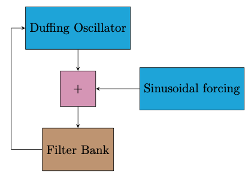

Interacting with Feedback
5: Gutter Oscillator
This system uses a specific nonlinear dynamical equation, itself a form of feedback system, and adds a set of resonant bandpass filters into the process. The dynamical system is a discrete map of the damped, forced Duffing Oscillator. The filters constrain the more chaotic aspects of the system.
Moving to the right increases the filter resonance, constraining the output to the frequencies found in the filter bank. Moving up and down increases and decreases the damping.
Diagram
